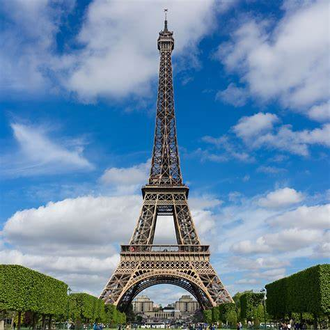
Europe Explorer
Browse all featured countries in Europe and open destination pages with real attractions.
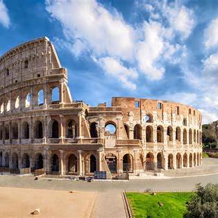
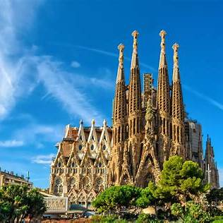
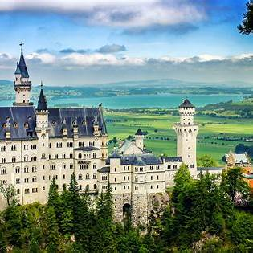
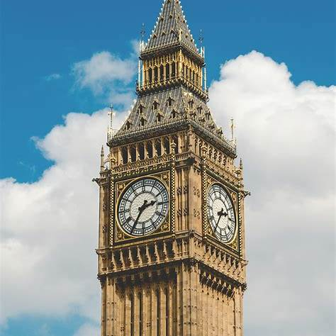
United Kingdom
Explore top attractions, itineraries, and travel insights for United Kingdom.
Open Destination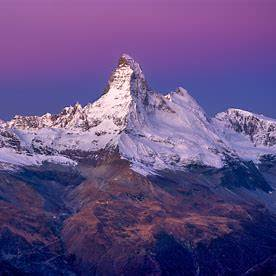
Switzerland
Explore top attractions, itineraries, and travel insights for Switzerland.
Open Destination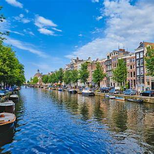
Netherlands
Explore top attractions, itineraries, and travel insights for Netherlands.
Open Destination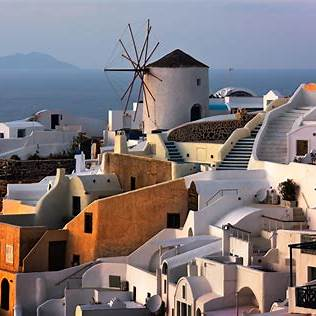
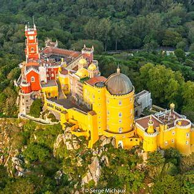
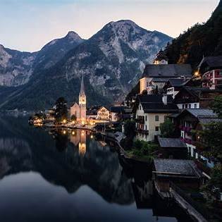
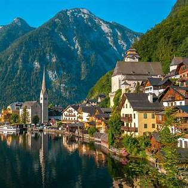
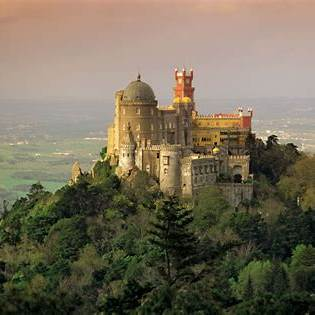
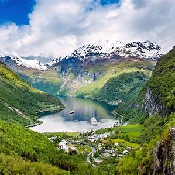
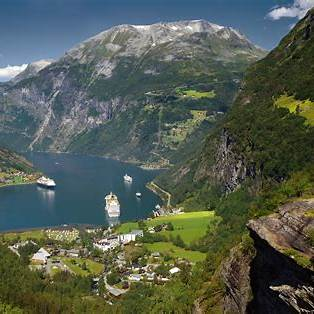
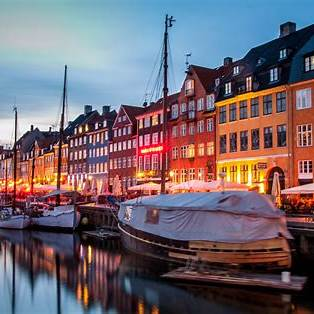
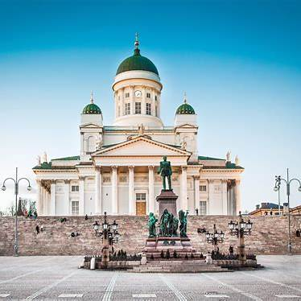
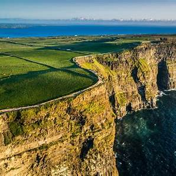
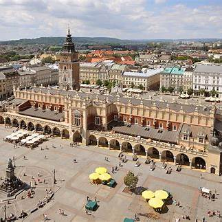
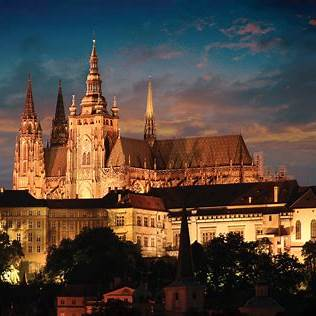
Czech Republic
Explore top attractions, itineraries, and travel insights for Czech Republic.
Open Destination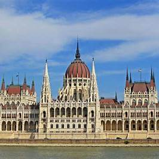